NIGHTREIGN Companion 利用マニュアル
ELDEN RING NIGHTREIGNの画面を監視し、ゲーム中の出来事や探索中の雑談を音声と字幕で知らせる非公式のWindowsアプリです。
ダウンロードと初回起動
Windows 10/11 x64とゲーム本体が必要です。アプリ用のPythonやAPIキーは初期設定では不要です。
- 配布ページで、Windows x64版のダウンロード案内にあるZIPを取得します。
- ZIPを右クリックして「すべて展開」し、展開先の一番上の
NightreignCompanion.exeを開きます。 - 初回はMicrosoftランタイム利用条件を確認し、同意して進みます。Windows標準音声とローカル定型文で開始できます。
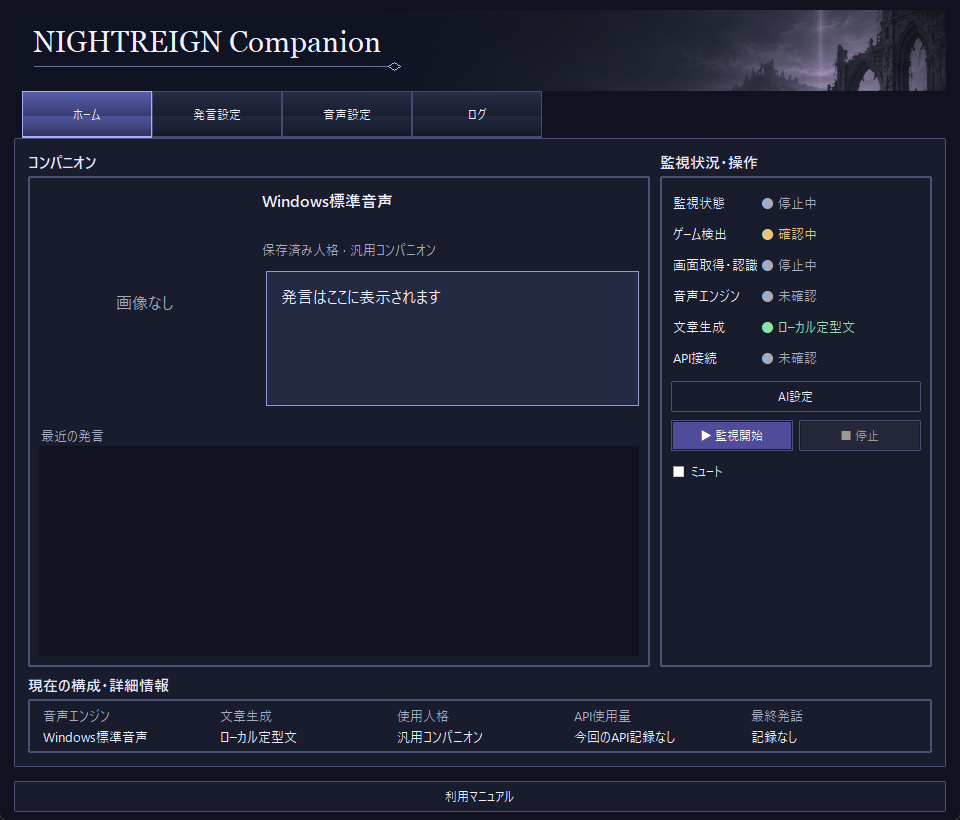
音声を選ぶ
Windows標準音声
「音声設定」でWindows標準音声を選び、「① 話者」から日本語音声または自動選択を指定します。音量と話速を調整し、「試聴」で聞いてから「保存」します。
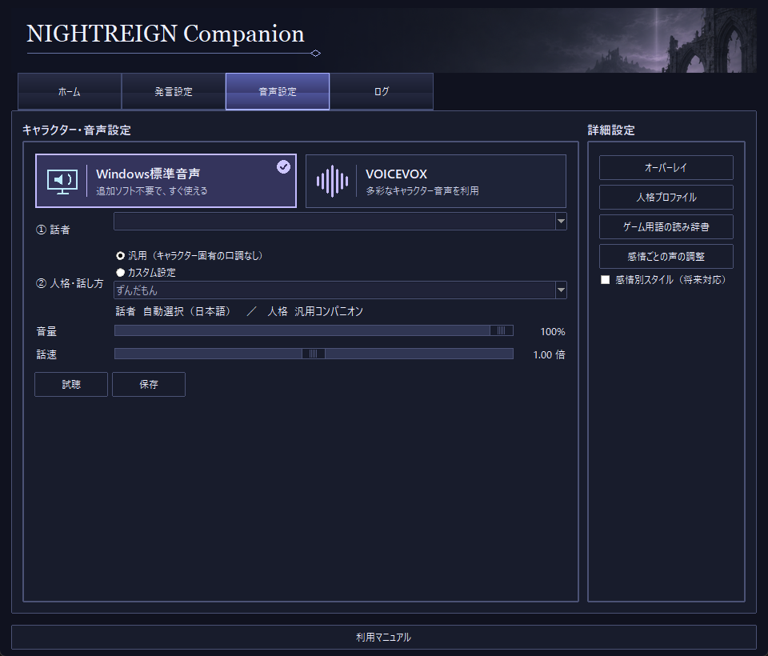
VOICEVOX GUI版
- 「VOICEVOX公式サイト」からWindows用のVOICEVOX本体を入手してインストールします。迷ったときはCPU版から始めてください。
- VOICEVOXを開き、エンジンが起動するまで待ちます。コンパニオンは付属エンジンを利用できます。
- コンパニオンの音声設定でVOICEVOXを選び、「接続確認」を押します。通常の接続先は
http://127.0.0.1:50021。VOICEVOXが別ポートを使う場合は実際の接続先を指定します。 - 「① 話者」からキャラクターを選び、「基本スタイル」で声色を決めます。「② 人格・話し方」は文章の口調です。音声と文章の口調は別々に設定できます。「試聴」して「保存」します。
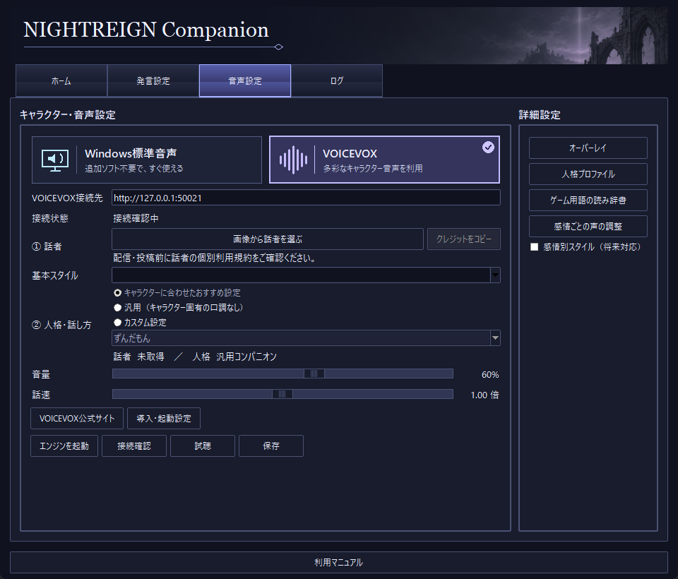
音声の詳細設定
「音声設定」右側の「詳細設定」から開きます。字幕と立ち絵の調整はオーバーレイ設定をご覧ください。
人格プロファイル
発言の口調を登録する画面です。上部の一覧で人格を選ぶと設定を確認できます。標準人格は読み取り専用なので、「複製」でコピーを作り、名前を変えて「保存」します。
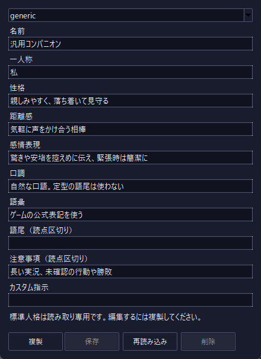
- 名前・一人称
- 一覧で見分ける名前と、発言で自分を指す言葉を指定します。
- 性格・距離感・感情表現
- 落ち着きや明るさ、プレイヤーへの接し方、感情の出し方を記述します。
- 口調・語彙
- 丁寧さや文章の長さ、よく使う言葉の傾向などを記述します。
- 語尾（読点区切り）・注意事項（読点区切り）
- 好む語尾と避けたい表現を、それぞれ「、」で区切って入力します。
- カスタム指示
- ほかの欄に収まらない話し方の指示です。たとえば「危険時は短く、落ち着いた語調で」と入力できます。
名前・一人称・性格・口調は必須です。たとえば「静かな案内役」、一人称「私」、性格「穏やか」、口調「短い丁寧語」として保存できます。「再読み込み」は保存済みの内容を読み直します。「削除」はカスタム人格のみで、使用中なら先に別の人格を選んで保存してください。
新しい人格を使うには、音声設定の「② 人格・話し方」で「カスタム設定」を選び、対象の人格を選んで音声設定も「保存」します。監視中でも音声の条件が同じなら、人格選択の変更は次回の発言生成から反映されます。話者・スタイルなど音声の条件も変えた場合は次回の監視開始からです。カスタム指示は主にAI生成に使われ、localの定型文を自由に書き換える機能ではありません。
ゲーム用語の読み辞書
VOICEVOXでの読み方を調整します。「新規」を押し、「表示語」に2文字以上の言葉、「読み（かな）」にひらがなまたはカタカナで読みを入れます。たとえば「聖杯瓶」→「せいはいびん」です。字幕や発言履歴の表記は元のままです。
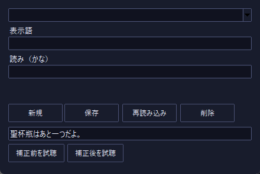
下の試聴文にその用語を含め、「補正前を試聴」「補正後を試聴」で比べてから「保存」します。補正後の試聴は入力中の用語と読みを使います。既存の用語は上部の一覧から選んで編集・削除できます。「再読み込み」で未保存の編集を戻せます。保存後は次のVOICEVOX合成から使われます。Windows標準音声には適用されません。
感情ごとの声の調整
「調整する感情」で「共通（個別指定がない感情）」か、通常・喜び・心配・高揚・安堵を選びます。保存した個別値、保存した共通値、標準の自動調整の順に使われます。各VOICEVOX話者・スタイルに共通する補正です。
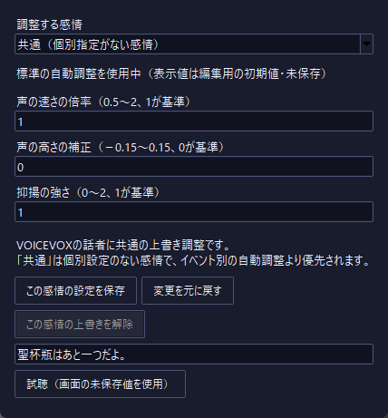
| 設定 | 入力範囲・基準 | 効果 |
|---|---|---|
| 声の速さの倍率 | 0.5〜2、基準1 | 音声設定の話速に掛けます。1より小さいと遅くなります。 |
| 声の高さの補正 | −0.15〜0.15、基準0 | 負の値で低め、正の値で高めにします。 |
| 抑揚の強さ | 0〜2、基準1 | 小さくすると抑揚を抑え、大きくすると強めます。 |
たとえば「心配」で速さ0.95、高さ−0.02、抑揚0.9を入力し、「試聴（画面の未保存値を使用）」で聞けます。VOICEVOXに接続した状態で試聴してください。「この感情の設定を保存」で次の合成から使われます。「変更を元に戻す」は未保存の編集を戻し、「この感情の上書きを解除」は保存済みの上書きを削除します。上書き未保存時の表示値は編集用の基準で、イベント別の自動調整値とは異なる場合があります。
感情別スタイル（将来対応）
現在は利用できません。チェックを入れると予定機能の説明が表示されます。発言ごとにVOICEVOXの基本スタイルを切り替える機能は未実装です。「感情ごとの声の調整」や、立ち絵の「感情別に切り替える」は現在使える別の機能です。
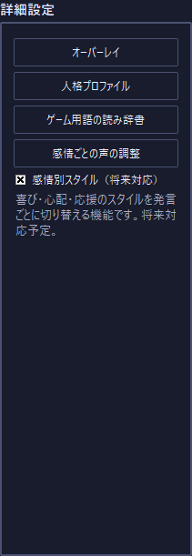
ENGINE単体を使う
上級者向けです。公式ENGINEの配布ページでWindows用の配布物を選び、全体を任意のフォルダーに展開します。CPU版は専用GPUを必要としません。NVIDIA GPU版は対応GPUとドライバーを用意できる場合に選び、起動できなければCPU版を試してください。
- 「音声設定」→「VOICEVOX」→「導入・起動設定」で、展開したENGINE単体の
run.exeを指定します。NVIDIA GPU版を使う場合はチェックを入れ、「保存」します。 - 「エンジンを起動」を押します。指定ポートで接続済みのエンジンが使える場合は、そのまま接続します。
- 外部で起動する場合は、起動時に指定したポートをコンパニオンに入力し、「接続確認」を押します。
既定のVOICEVOX-ENGINEフォルダーにあるCPU版・NVIDIA版は自動検出を試みます。任意フォルダーに展開した場合は手動指定できます。GUI版の付属ENGINEはVOICEVOX本体から起動してください。本体から起動したエンジンの終了はVOICEVOX側で行います。
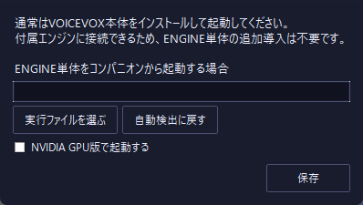
OpenAI・Geminiとローカル定型文
ホームの「AI設定」で生成方式を選びます。初期値のlocalは端末内の定型文です。OpenAIやGeminiを選ぶ場合は、各サービスで取得した自分のAPIキーを対応する設定欄に入力し、接続確認と保存を行います。音声方式とは独立した設定で、利用料やデータの取り扱いは各提供元の条件に従います。キーを画像やログに写さないでください。
文章生成方式とモデル
ホームの「AI設定」で「AI生成設定」を開きます。「文章生成方式」で選べるのは local、openai、gemini の3つです。local は端末内の定型文を使い、モデルやキーは入力不要です。OpenAI・Geminiでは観測したイベントに応じて文章を生成し、安全な場面では振り返りや雑談も候補になります。一部の緊急通知はAIを選んでいても定型文を使います。
「OpenAIモデル」または「Geminiモデル」で候補を選ぶか、利用できるモデルIDを直接入力します。初期表示はOpenAIが gpt-5-mini、Geminiが gemini-3.5-flash-lite です。他のモデルを指定する場合は、登録したキーで使えることを接続テストで確かめます。
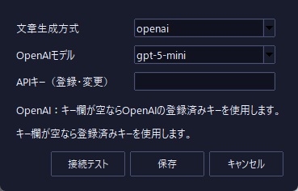
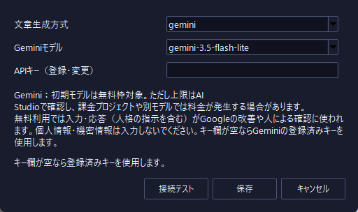
APIキー・接続テスト・保存
- 選んだサービスのキーを「APIキー（登録・変更）」に入力します。空欄のまま操作すると、選んだサービスの登録済みキーを使います。
- 「接続テスト」を押します。実際にAPIへ接続するため、利用条件に応じて通信・使用量が発生します。このボタンだけでは設定は保存されません。
- 結果を確認して「保存」。文章生成方式とモデルの変更は次回の監視開始から反映されます。「キャンセル」は保存せず閉じます。
接続テストが失敗したら、キー、モデルID、ネットワーク、提供元の利用制限や課金設定を確認します。テスト失敗だけで設定がlocalに切り替わることはありません。監視中にAI生成が失敗した場合は、定型文のある通知では定型文に戻る場合があり、AIが必要な自発的発言は見送ります。クラウドを使わず続けるなら手動でlocalを選んで保存してください。
API使用量と料金
ホーム下部の「現在の構成・詳細情報」にある「API使用量」で、今回の監視中に記録したトークン数と、算定できた場合の概算額を確認できます。新しく監視を開始すると集計はリセットされます。表示に含まれない使用や料金未算定のモデルがあるため、実際の請求・上限は提供元の管理画面で確認してください。
ChatGPTなどの月額契約と、コンパニオンがAPIキーで行うAPI利用の料金は別です。OpenAIの料金はAPI側のアカウントで確認します。Geminiも利用するAPIプロジェクトのモデル・無料枠・課金設定に従います。 ChatGPTとOpenAI APIの請求 · Gemini APIの料金
発言設定
戦闘や出撃の通知を選び、発言間隔を調整します。「保存」を押すと、次回の監視開始から反映されます。監視中に変更した場合は、いったん「停止」を押してから監視を開始し直してください。声の大きさや速さは「音声設定」で変えられます。
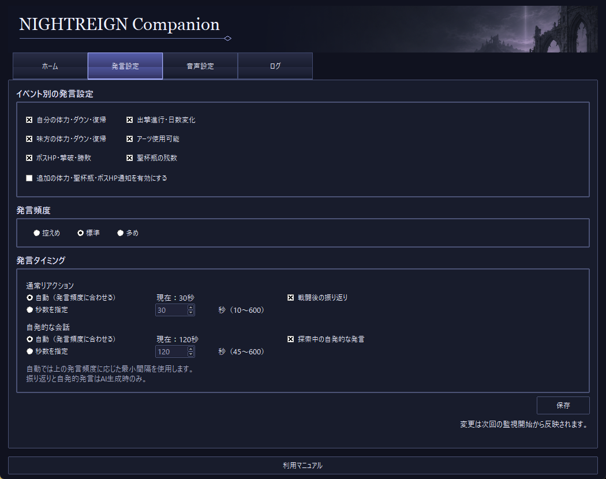
イベント別の発言設定
各グループはオン・オフを選択でき、初期値は6グループともオンです。イベントはグループ単位で切り替えます。「追加の体力・聖杯瓶・ボスHP通知を有効にする」は初期値オフです。追加通知を聞くには、この項目と該当グループを両方オンにしてください。
| 画面の項目 | 主な発言 |
|---|---|
| 自分の体力・ダウン・復帰 | 自分のダウン・復帰など。追加通知をオンにすると、低HP、大きなHP減少、満タンへの回復も対象になります。 |
| 味方の体力・ダウン・復帰 | 上下の味方のダウン・復帰、2人ともダウンしたときの通知。追加通知をオンにすると、味方の低HPも対象になります。 |
| ボスHP・撃破・勝敗 | ボス戦開始、ゲージ全損・一部全損、確認できた最終勝利・敗北。追加通知をオンにするとHP半分・低HPも対象になります。ゲージ全損と最終勝利は別の通知です。 |
| 出撃進行・日数変化 | 1日目・2日目の夜戦開始、2日目開始、3日目の待機部屋、最終ボス戦開始。途中から監視すると、日数を確定できない場合があります。 |
| アーツ使用可能 | アーツが使用可能になったと確認できたときの通知。 |
| 聖杯瓶の残数 | 残り1個・使い切りの通知。追加通知をオンにすると対象になります。 |
発言頻度
「自動（発言頻度に合わせる）」の最小間隔は、下の表のとおりです。頻度は追加通知などを再び候補にできる間隔にも関係します。両方の発言タイミングを手動にした場合も、頻度の影響は残ります。
| 頻度 | 通常リアクション | 自発的な会話 | 向いている遊び方 |
|---|---|---|---|
| 控えめ | 45秒 | 180秒 | ゲーム音や会話を中心に、通知を少なめにしたいとき。 |
| 標準（初期値） | 30秒 | 120秒 | 反応の間隔と静かさのバランスを取りたいとき。 |
| 多め | 18秒 | 80秒 | 戦闘や探索で声かけを聞く機会を増やしたいとき。 |
発言タイミング
- 通常リアクション
- 普通のイベント反応の最小間隔です。「自動」が初期値で、標準では30秒。「秒数を指定」では10〜600秒の整数を入力できます。高優先度の緊急通知などには通常とは別の条件があります。
- 自発的な会話
- 探索中の自発的な発言の間隔です。「自動」が初期値で、標準では120秒。「秒数を指定」では45〜600秒の整数を入力できます。安全な探索と認識できることや、優先する別の発言がないことも必要なので、一定周期で必ず発言する設定ではありません。
- 戦闘後の振り返り
- 初期値オン。OpenAI・Gemini利用時、戦闘後の落ち着いた場面で、実際に観測した内容から振り返ります。直前に話した内容しかない場合などは見送ります。探索中の会話間隔とは別に判定します。
- 探索中の自発的な発言
- 初期値オン。OpenAI・Gemini利用時、安全な探索中に雑談の候補を出します。戦闘やメニュー、画面の状況が不明なときは控えます。振り返りと自発的発言は、localではオンでも発生しません。
オーバーレイ設定
「音声設定」右側の「オーバーレイ」を開くと、「表示設定」と「キャラクター画像」の2タブが開きます。下部のプレビューで、保存前の見た目を確認できます。
表示設定
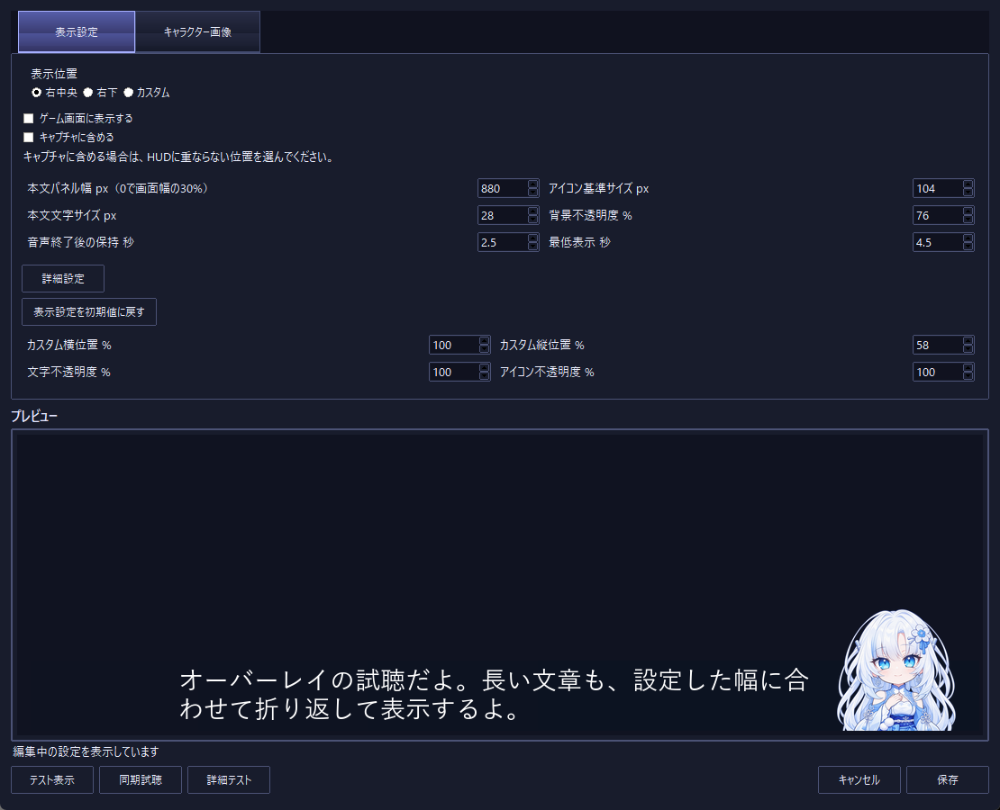
| 画面の項目 | 初期値と範囲 | 表示への影響 |
|---|---|---|
| 表示位置 | 右中央。右下、カスタムも選択可能 | 字幕と画像をまとめて配置します。カスタムでは横・縦位置の数値を使います。 |
| ゲーム画面に表示する | オフ | オンで、監視中の発話に合わせて表示します。設定画面のプレビューにはオフでも表示できます。 |
| キャプチャに含める | オフ | 録画などに表示を含めたい場合にオンにします。取り込み結果はキャプチャ方式にも依存します。録画に映す場合はHUDを隠さない位置で確認してください。 |
| 本文パネル幅 px（0で画面幅の30%） | 880 px。0または180〜1100 px | 細くすると字幕の折り返しが増えます。実際の幅は画面サイズと立ち絵の領域にも制約されます。 |
| アイコン基準サイズ px | 104 px。48〜144 px | 立ち絵の基準サイズです。実際の表示寸法は画面サイズや画像の倍率でも変わります。 |
| 本文文字サイズ px | 28 px。16〜48 px | 字幕の大きさ。表示領域に収めるため調整されることがあります。 |
| 背景不透明度 % | 76%。0〜100% | 字幕背景を薄くしたり濃くしたりします。文字と立ち絵は別の値で設定します。 |
| 音声終了後の保持 秒 | 2.5秒。0〜15秒 | 再生が正常に終わってから字幕を残す時間です。 |
| 最低表示 秒 | 4.5秒。0〜15秒 | 表示開始からの最低時間。通常は保持時間とこの時間の両方を満たして消えます。割り込み、取消、再生失敗、次の発話では早く消えたり切り替わったりします。 |
| カスタム横位置 % | 100%。0〜100% | 「カスタム」のとき、0%で左側、100%で右側に寄せます。 |
| カスタム縦位置 % | 58%。0〜100% | 「カスタム」のとき、0%で上側、100%で下側に寄せます。 |
| 文字不透明度 % | 100%。0〜100% | 字幕の文字だけを薄くします。0%では文字が見えなくなります。 |
| アイコン不透明度 % | 100%。0〜100% | 立ち絵だけを薄くします。立ち絵を見せずに字幕を使う場合は0%にできます。 |
カスタム位置と文字・アイコンの不透明度は「詳細設定」にあります。「表示設定を初期値に戻す」は編集中の表示値を戻します。「保存」で確定してください。
キャラクター画像
音声設定でVOICEVOXの話者を先に選んでください。画面上部の「対象話者」に選んだ話者が表示されます。画像の選択と補正は話者ごとに保存されます。未設定の話者に標準セットがあれば自動選択され、登録済みの設定があればそちらが優先されます。Windows標準音声では話者別の立ち絵は使われません。
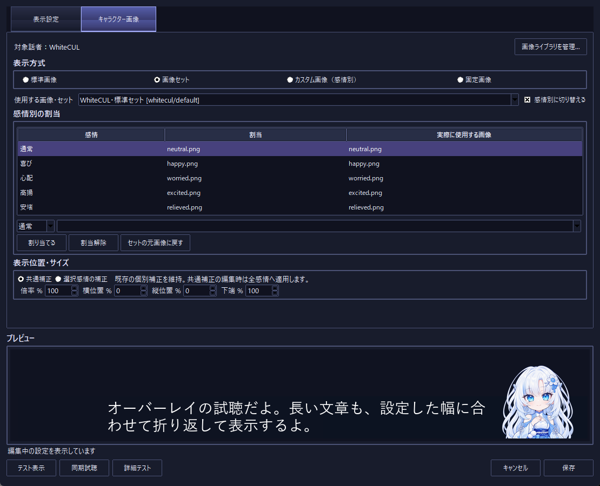
| 表示方式 | 使い方 |
|---|---|
| 標準画像 | VOICEVOXの話者画像を使います。未取得時は汎用表示になります。 |
| 画像セット | 「使用する画像・セット」で同梱の標準セットか追加したセットを選びます。 |
| カスタム画像（感情別） | 登録した個別PNGを、通常・喜び・心配・高揚・安堵に割り当てます。 |
| 固定画像 | 登録したPNGを選び、同じ画像を使います。 |
「画像セット」と「カスタム画像（感情別）」では「感情別に切り替える」で切替を有効にできます。複数の表情を持つ標準セットの未設定時はオンです。保存済みの選択が優先され、オフなら通常画像を使います。感情画像が欠けている場合も通常画像へ戻ります。
「感情別の割当」の表では「割当」と「実際に使用する画像」を確認できます。行または感情の一覧で対象を指定し、登録済みPNGを選んで「割り当てる」を押します。「割当解除」でその感情の割当を外し、「セットの元画像に戻す」でセットの元の表情に戻せます。
表示位置・サイズ
編集範囲の初期選択は「共通補正」です。全感情を同じ値にするときに使います。「選択感情の補正」は選んだ感情だけを調整します。共通補正を編集すると、同じセットの個別補正は共通値にそろいます。固定画像の補正はその画像全体に適用されます。
| 補正項目 | 範囲と基準値 | 変化 |
|---|---|---|
| 倍率 % | 50〜200%、通常100% | 画像を拡大・縮小します。セットの base_scale があれば初期倍率に反映します。 |
| 横位置 % | −30〜30%、0% | 画像だけを左右にずらします。実表示は画面端で制限されます。 |
| 縦位置 % | −30〜30%、0% | 負の値で画像を上げます。ゲーム画面の通知表示では上方向への持ち上げとして適用します。 |
| 下端 % | 10〜100%。セットは通常100%、バスト用設定は78% | 使う画像の下端を指定します。値を下げると下側を切り詰めます。個別PNGの新規登録は100%です。 |
画像ライブラリ
「画像ライブラリを管理…」を開きます。「個別PNG」の「PNGを追加…」で登録した画像は、元画面で固定画像として選ぶか、感情別に割り当てられます。「選択画像を登録解除」はその画像を使う割当も解除します。元のPNGファイルは残ります。
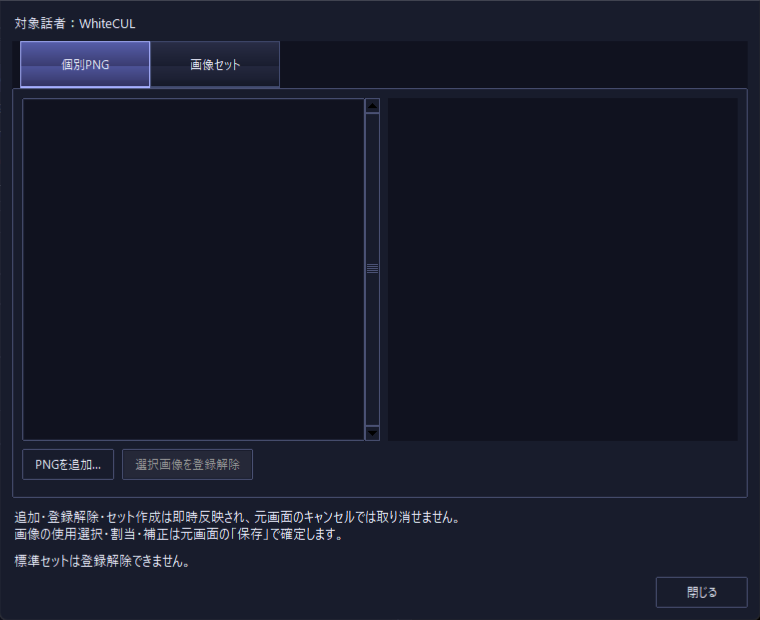
「画像セット」では同梱セットを一覧で確認し、「ZIPを追加…」でセットを登録します。「選択セットを登録解除」は追加セットに使えます。同梱セットは登録解除できません。「編集中の感情別PNG割当からセット作成…」で、すでに割り当てた画像を新しいセットへまとめることもできます。
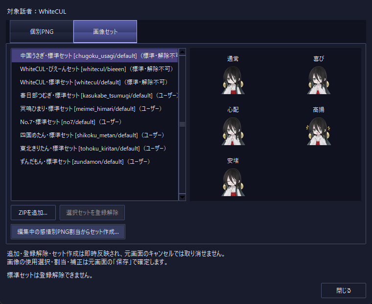
画像はPNG形式で、透明背景にも対応します。1枚は1,600万画素以下、ZIPは64項目・展開後32 MB以下です。PNGをZIPにまとめて manifest.json をルートに置くと、自動で割当を読み込めます。manifestがなければ登録時にIDと各PNGを指定します。neutral は必須で、残り4種類は任意です。
{
"schema_version": 1,
"character_id": "my-character",
"set_id": "default",
"display_name": "自作の立ち絵",
"emotions": {
"neutral": "neutral.png",
"happy": "happy.png",
"worried": "worried.png",
"excited": "excited.png",
"relieved": "relieved.png"
}
}IDは英小文字・数字・ハイフン・下線で最大64文字、先頭は英小文字または数字にします。同じキャラクターIDとセットIDの組み合わせを重複登録できません。画像名はZIP内の相対パスで指定してください。任意の layout で base_scale に0.5〜2、crop_mode に bust を指定できます。
プレビュー・保存
- プレビュー／テスト表示
- 編集中の表示を確認します。「テスト表示」はサンプル発話を模擬し、音声は再生しません。
- 同期試聴
- VOICEVOXでサンプルを読み上げ、音声と字幕の表示タイミングを試せます。VOICEVOXの選択と接続が必要です。
- 詳細テスト
- 「割り込み」は緊急表示への切替、「テスト停止」は試聴・表示の中止、「失敗イベント」は再生失敗時の扱いを試します。「ゲーム上でテスト」はゲームウィンドウが必要で、編集中の設定を一時表示します。
- 保存／キャンセル
- 「保存」で表示設定・画像選択・割当・補正を確定します。監視中のオーバーレイにも保存した設定が反映されます。「キャンセル」では編集中の値を破棄します。画像ライブラリの追加・登録解除・セット作成は即時反映され、元の設定画面をキャンセルしても残ります。
下の比較は設定画面のプレビューです。実ゲーム画面ではありません。
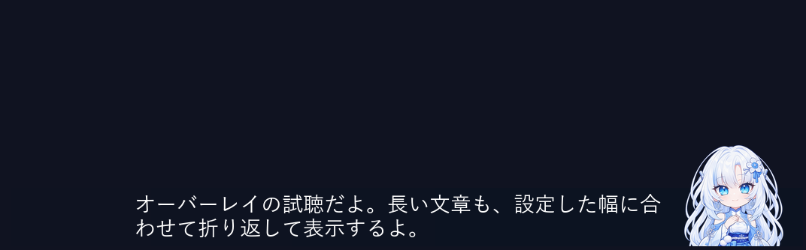
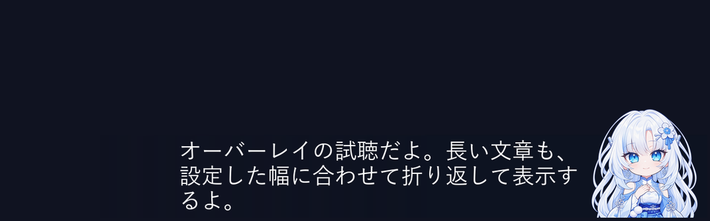
監視開始・停止とログ
ゲームを開き、ホームでゲームの検出状態を確認して「監視開始」を押します。出撃開始から記録したい場合は出撃前から監視してください。終了時は「停止」を押し、終了を確認してからアプリを閉じます。
「ログ」タブで発言履歴を確認できます。出撃ごとの記録は展開先の user-data/runs が既定です。保存先を変更している場合は指定したフォルダーをご確認ください。
バックアップ・復元と更新
ホーム下の「バックアップ・復元」から、設定・立ち絵・出撃記憶をアプリフォルダーの外へ保存できます。個別の出撃ログも残すなら監視停止後に runs を別途コピーします。復元一覧を確認してから適用してください。APIキーはWindowsユーザーに紐付いて暗号化され、バックアップの対象外です。
「アップデートを確認」→「オンラインで更新を確認」を選びます。変更内容を読んでダウンロードを承認し、署名検証後に適用を承認します。アプリは監視を停止して新版を適用し、診断に失敗した場合は旧版へ戻します。初回配布ZIPは別フォルダーに展開してください。
困ったとき
- VOICEVOXが未導入
- 公式のGUI版を導入するか、Windows標準音声を選びます。
- 接続できない・ポート使用中
- VOICEVOX本体を開いて起動完了を待ち、実際のポートで接続確認します。別のアプリが使っているポートの場合は接続先を見直します。
- ENGINEの起動失敗
- 展開先、実行ファイル、CPU/GPUの設定を確認します。GPU版は対応ドライバーを確認し、画面に表示された起動ログも参照してください。
- Windows音声が鳴らない
- 音量と出力先を確認し、日本語音声が一覧に出ない場合はWindowsの言語・音声設定で追加します。
- 認識や更新がうまくいかない
- ゲーム画面が見える状態で検出表示を確認します。更新情報の取得に失敗した場合は、少し時間を置いて再確認してください。
- 通知や雑談が出ない
- ホームの監視状態とミュートを確認します。通知は該当グループと追加通知の設定、雑談は生成方式とオン・オフを確認してください。発言設定の変更後は、保存して監視を開始し直します。発言間隔を満たしても、画面判定や優先度によって候補が見送られることがあります。音声出力だけを確かめるには「音声設定」の「試聴」を使います。
- 字幕・立ち絵が出ない
- 「ゲーム画面に表示する」をオンにして保存し、ゲームが検出されているか、文字・アイコン不透明度が0%になっていないか確認します。字幕は再生開始に同期するため、音声の再生失敗時は表示されないことがあります。立ち絵は「対象話者」と「実際に使用する画像」を確認してください。録画に映らない場合は「キャプチャに含める」と録画ソフトの取り込み方式を見直します。
利用条件・クレジット
本アプリは非公式のファン制作ツールです。画面の解像度・表示モード・遮蔽で認識結果が変わります。VOICEVOX音声を配信・投稿する場合は「クレジットをコピー」を利用し、使用した話者の規約に沿って表記してください。画像や第三者ライブラリの表記は配布READMEと同梱文書にあります。 VOICEVOX利用規約 · 話者別規約